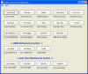

Tymeac Process Selection Menu,
com.tymeac.client.jframe.TyMenu
This frame class displays a selection of the Tymeac Frame Classes.
Since any new Frame Class is part of the same Java Virtual Machine, closing any window ends the JVM [all windows]. Except - When running as part of the internal server, then closing any window only closes the single window.
 (click to link to full image)
{kind=link}
Buttons
(Button names are the names of the Tymeac Classes.)
TyAltSvr -- Press for the Alter Server Options Class.
TyCfg -- Press for the Tymeac Configuration File Class.
TyFuncData -- Press for the Tymeac Function Data Class.
TyFuncMaint -- Press for the Tymeac Function Maintenance Class.
TyNewCopy -- Press for the Tymeac New Application Class.
TyNewRTNotify -- Press for the Tymeac New Run Time Notification Class.
TyNewRTLog -- Press for the Tymeac New Run Time Logging Class.
TyNewRTStats -- Press for the Tymeac New Run Time Statistics Class.
TyOverall -- Press for the Tymeac Overall Status Class.
TyQueData -- Press for the Tymeac Queue Data Class.
TyQueMaint -- Press for the Tymeac Queue Maintenance Class.
TyQueThd -- Press for the Tymeac Queue Thread Class.
TyReqStatus -- Press for the Tymeac Asynchronous Request Status Class.
TyShutdown -- Press for the Tymeac Shut Down Class.
TyStats -- Press for the Tymeac Statistics request Class.
TyStalled -- Press for the Tymeac Stalled Request Class.
TyWlData -- Press for the Tymeac Queue Wait List Class.
TyUserQue -- Press for the Tymeac User Queue Class Maintenance Class.
TyUserFunc -- Press for the Tymeac User Function Class Maintenance Class.
TyUserVar -- Press for the Tymeac User Variables Class Maintenance Class.
TyVar -- Press for the Tymeac Start Up Variables Class Maintenance Class.